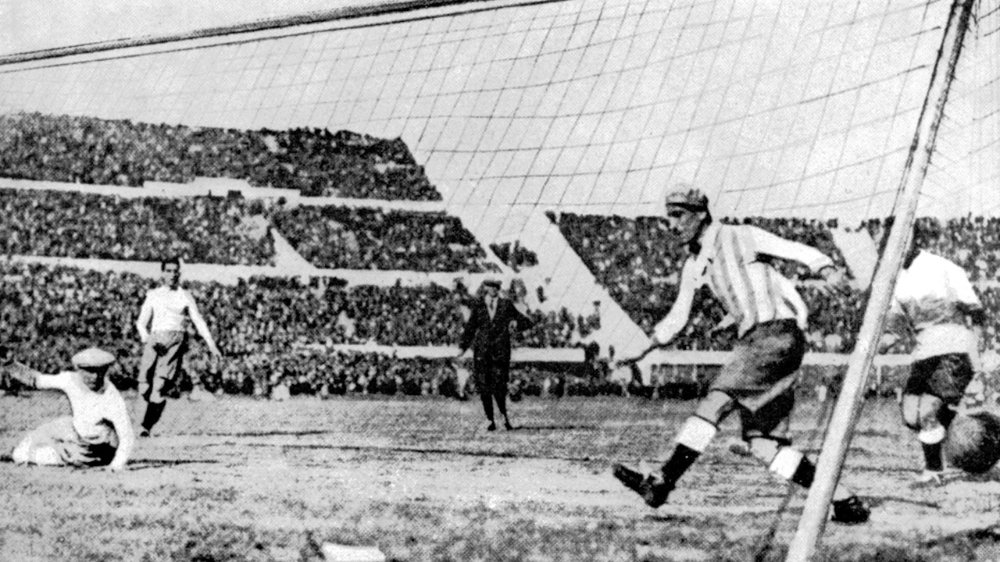

Copa do mundo de 1930
o primeiro torneio de futebol mais importante do mundo realizado no Uruguai e foi escolhido graças ao centenário de independência do país e foi a única edição que teve a participação de países convidados e consagrou naquele momento até então a bicampeã olímpica de futebol na época como primeira vencedora da competição